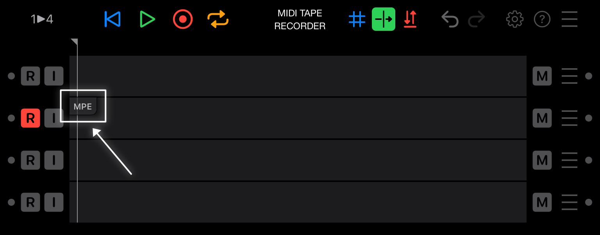
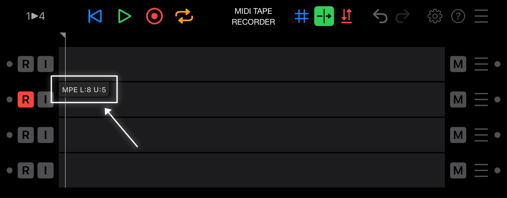
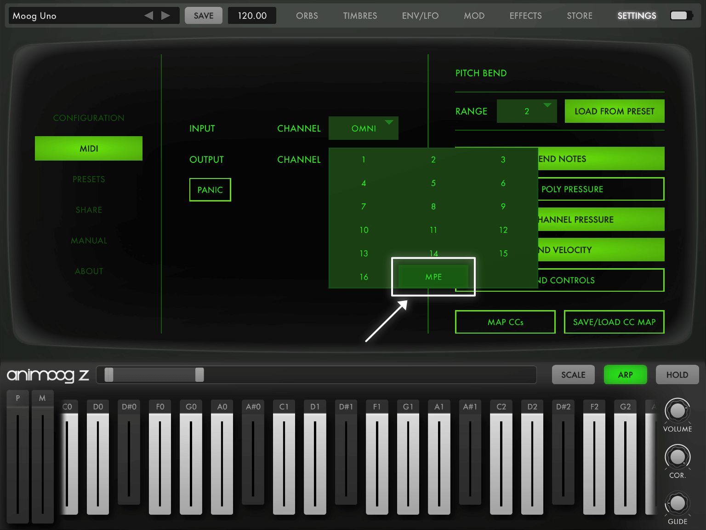
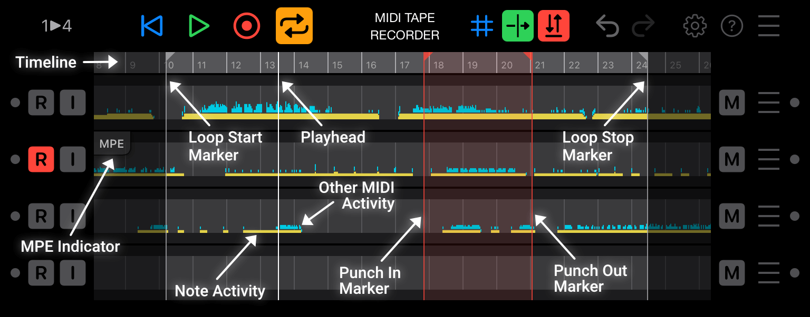
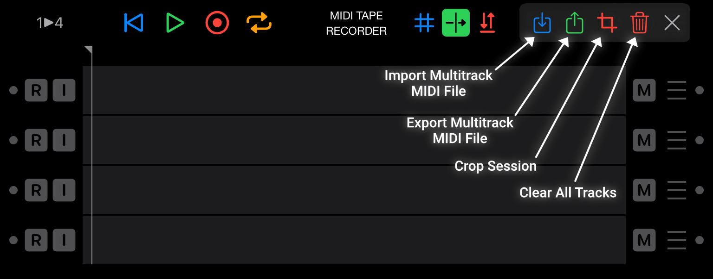
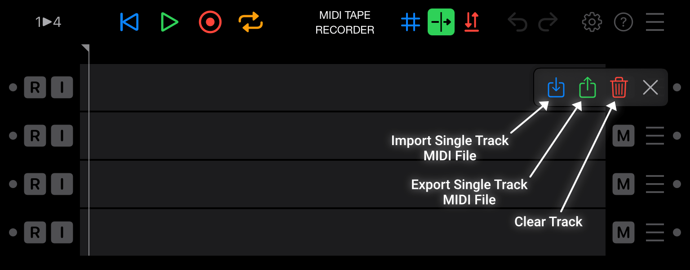
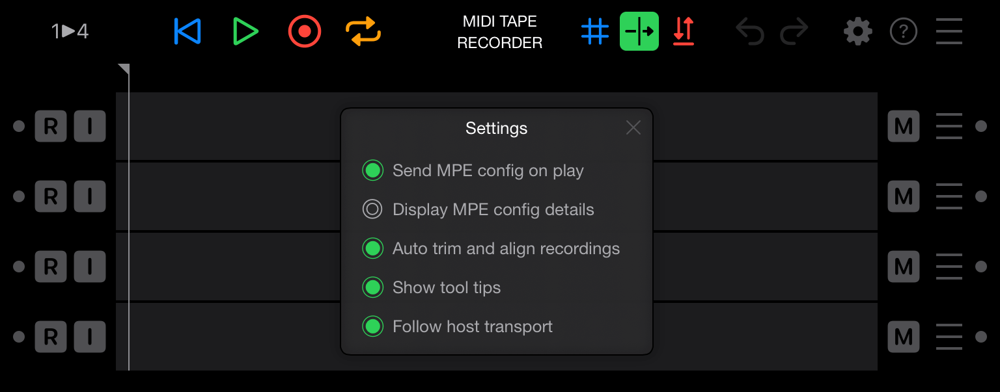

MIDI Tape Recorder Documentation
MIDI Tape Recorder Documentation
Welcome
Thanks for taking the time to read through this documentation.

Once you understand how to connect MIDI Tape Recorder (MTR) to your gear and plugins, and what the buttons do, you should not have to read it again. MTR was designed to be fun, intuitive and unobtrusive.
MIDI Tape Recorder can record any MIDI channel voice messages that it receives and reproduces those perfectly upon playback.
Note: MTR will not record any MIDI system messages.
Making Connections
Since MTR is an AUv3 plugin, you need to first make a connection to one of the MIDI Inputs, and then another connection from one of the MIDI Outputs.
Controller to Recorder to Synth
Typically you will connect a physical MIDI Controller (like LinnStrument) or a MIDI Controller App (like GeoShred) to a MIDI Input and connect a MIDI Synthesizer (like Animoog Z, Model 15, Minimoog Model D) to a MIDI Output.

In order to hear what you're playing on the Controller, you'll have to enable Input Monitor for the appropriate track in MIDI Tape Recorder. This passes the MIDI that's received immediately through to the output, even when MTR is not playing.

To verify that MIDI is being received and sent correctly, you can play your controller and check the activity lights inside MTR on left and right edge of each track. If they flicker green, MIDI is going through correctly.

Each DAW and plugin host has their own way of making MIDI connections, please refer to the manual of your preferred host for details.
As an example, this is what the MIDI routing could look like inside the AUM host on iOS.

Synths that are also controllers
Some plugins can both act as MIDI Controllers and MIDI Synthesizers (like Animoog Z), in that case you can connect the same plugin to both the MTR MIDI Input and Output.

Now, make sure to disable Input Monitor for the appropriate track in MTR because otherwise similar messages will be used twice by the same synthesizer, which can lead to unexpected results.

Each DAW and plugin host has their own way of making MIDI connections, please refer to the manual of your preferred host for details.
As an example, this is what the MIDI routing could look like inside the AUM host on iOS.

Multiple MIDI input connections
MIDI Tape Recorder supports a newer AUv3 feature where multiple virtual MIDI Input cables can be used for a single plugin. As of this writing the only host that supports this is AUM v1.4.0 beta and later.
When your host supports multiple input cables, MIDI Tape Recorder has four independent MIDI Input ports available for connection.
By tapping on the 1 ▶︎ 4 toggle button, you can change it to 4 ▶︎ 4 and have MIDI Tape Recorder use the four MIDI input ports.


Tapping 4 ▶︎ 4 will change it back to 1 ▶︎ 4 and MIDI Tape Recorder will go back to only using one MIDI Input port.


By using the four separate inputs you can keep different controllers connected and routed to dedicated synth plugins. However when routing the first input to all four tracks, the same controller can easily be used for all the synths you're recording. It's really up to you to decide which configuration is the most appropriate for what you're trying to achieve, they both are useful.
Make a Recording
Now that everything is connected and that you've verified that the input activity lights are working, press Record Enable on a track and press Record Arm in the toolbar.

As soon as you start playing on your controller or press the Play button in the toolbar, MIDI Tape Recorder will record your performance.
Note: you can also press Play in your host and MIDI Tape Recorder will automatically start recording at the same time.

When you're done, press the Play button to stop recording and press Play again to hear what you've recorded, or press the Repeat button while recording to immediately start looping in case you want to play or record over it with another synth.

MPE Support
MIDI Tape Recorder was designed specifically for MPE controllers and MPE synthesizers.
Not only does MTR preserve the exact timing and order of all the MIDI messages, it also provides support for the standard MPE Configuration Message (MCM) and MIDI RPN 0 Pitch Bend Sensitivity message.
When a track is set to Record Enable, any MCM and RPN 0 message that's received, will be remembered. When this is the case, MTR will display an MPE Indicator button in the top-left corner of the track.

By default, each time playback starts, the MCM and RPN 0 will be sent to the output, ensuring that the synthesizer receiving the MIDI recorded messages will be configured exactly as it was when you were recorded your performance.
Tip: Tapping the MPE Indicator will immediately send out the MCM and RPN 0 without waiting for playback.
Note: MPE zone details can be displayed in the MPE indicator by enabling this in the settings.

Sending the MCM from your controller
Every MPE compliant device is required to support the MPE Configuration Message. Each controller has its own way of enabling and sending out the MCM.
Below are two examples, check the manual of your controller to know how and when the MCM is being sent.
Animoog Z

- Tap Settings in the toolbar
- Tap MIDI in the sidebar
- Tap the button next to the Output Channel
- Tap MPE in the available MIDI channel options
LinnStrument

- Press Per-Split Settings
- Press and hold ChPerNote in the Midi Mode column
- Wait until it turns blue
The MIDI Tape Recorder GUI
This section contains a complete reference of the MIDI Tape Recording GUI.

Track controls
-
Input Activity Indicator:
Lights green when MTR receives MIDI for the track.
-
Record Enable:
When enabled (red), record MIDI messages to the track.
-
Input Monitor:
When enabled (green), pass MIDI messages received for the track straight through to the output.
-
Output Mute:
When enabled (yellow), don't output any messages for the track.
-
Track Tools:
When pressed, access additional track-specific tools.
-
Output Activity Indicator:
Lights green when MTR outputs MIDI for the track.
Session controls
-
Input Routing:
Switches between sending the first input channel to all tracks, or using a dedicated input channel for each track. (only supported on some hosts)
-
Rewind:
When pressed, returns to the loop start marker, or the beginning of the recording, depending on where the playhead is.
-
Play:
When pressed, either starts or stops moving the playhead. If record is enabled, this will also start or stop recording. Play will automatically adapt to the transport state of the host.
-
Record Arm:
When enabled, recording will start when the playhead is moving.
-
Repeat:
When enabled, playback and recording will loop between the start and stop locators. When Record Arm is enabled, it will stay enabled while repeating until you've recorded at least one MIDI message during the current loop, after that Record Arm will automatically turn off.
Repeat can be enabled during recording to immediately end the recording and start looping.
-
Snap To Beat:
When enabled, snap the loop, punch in/out and playhead markers to the beat after dragging them to a new position.
-
Auto Scroll:
When enabled, the visible area of your recorder will automatically scroll to keep the playhead visible.
-
Punch In/Out:
When enabled, only record MIDI messages between the punch in/out locators when Record Arm is enabled.
-
Undo:
When pressed, undo the last recording change you made.
-
Redo:
When pressed, redo the last recording change you undid.
-
Settings:
When pressed, show the global settings dialog.
-
Session Tools:
When pressed, access additional session-specific tools.

Recording UI
-
Timeline:
Shows the duration of the session in beats.
-
MPE Indicator:
Indicates that an MPE Configuration Message (MCM) was received for this track. By default the MCM will be output every time this track starts playing. Tapping the MPE indicator will send the MCM immediately
Tip: The settings dialog allows disabling the automatic sending of the MCM message, or to enable the display of the MCM details.
-
Playhead:
Indicates the beat position at which the playback and recording happens.
Tap and drag to reposition, tap on the timeline to set the playhead to that location.
-
Loop Start Marker:
Indicates the beat position of where the playback loop starts.
Tap and drag to reposition, double-tap to reset to the beginning of the session.
-
Loop Stop Marker:
Indicates the beat position of where the playback loop stops.
Tap and drag to reposition, double-tap to reset to the end of the session.
Tip: tap and drag on the timeline between the loop start and stop marker to reposition them together.
-
Punch In Marker:
Indicates the beat position of where the punch in recording starts.
Tap and drag to reposition, double-tap to reset to the beginning of the session.
-
Punch Out Marker:
Indicates the beat position of where the punch out recording stops.
Tap and drag to reposition, double-tap to reset to the end of the session.
Tip: tap and drag on the timeline between the punch in and out marker to reposition them together.
-
Note Activity:
Visual summary of MIDI note activity and duration.
Yellow when playing back, red when recording.
-
Other MIDI Activity:
Visual overview of non-note MIDI message activity.
Teal when playing back, white when recording.

Session Tools
-
Import Multitrack MIDI File:
When pressed, shows a file selector to open a MIDI type 1 file that will be imported into the session. Existing tracks will be completely replaced. Up to four MIDI tracks can be imported.
-
Export Multitrack MIDI File:
When pressed, shows a file selector to save a MIDI type 1 file with all the tracks that are in the current session. This MIDI file is of the highest possible timing resolution, but is still not as precise as MIDI Tape Recorder's internal format. It also lacks additional settings that MTR stores in its session. Consider saving MTR's state in your host or DAW as presets instead of exporting MIDI files.
-
Crop Session
When pressed and confirmed, the loop start and stop markers will be used to crop your session.
-
Clear All Tracks:
When pressed and confirmed, all recorded data in all tracks will be cleared.

Track Tools
-
Import Single Track MIDI File:
When pressed, shows a file selector to open a MIDI type 1 file that will be imported as this track. The recorded data will be completely replaced. Only the first track in the file will be imported.
-
Export Single Track MIDI File:
When pressed, shows a file selector to save a MIDI type 1 file with recorded data of this track. This MIDI file is of the highest possible timing resolution, but is still not as precise as MIDI Tape Recorder's internal format. Consider saving MTR's state as presets in your host or DAW instead of exporting MIDI files.
-
Clear Track:
When pressed and confirmed, the recorded data in this track will be cleared.

Settings
-
Display MPE config details:
When enabled, the MPE indicator on a track will show the details of the MPE zone configurations.
When disabled (default), the MPE indicator doesn't display any configuration details.
-
Show tool tips:
When enabled (default), a tool tip will be displayed for each action that is performed.
When disabled, tool tips will not be displayed.
-
Send MPE config on play:
When enabled (default), a track with an MPE Configuration Messages (MCM), will output this MCM each time playback is started.
When disabled, an MCM will not be sent automatically, an MCM can still be sent by tapping the MPE Indicator.
-
Follow host transport:
When enabled (default), changes to the host transport will influence MTR.
When disabled, MIDI Tape Recorder's transport will run independently of the host's transport.
-
Wait for next host beat to play:
When enabled, MIDI Tape Recorder will only start playing at the next beat of the host transport, this is useful when using MTR as a clip launcher.
When disabled (default), MTR will start playing immediately.
-
Auto trim and align recordings:
When enabled (default), silence will be trimmed from the end of recordings and their duration will be changed to align with the nearest beat.
When disabled, recordings will remain exactly as they were when the recording ended.
-
Auto rewind after recording:
When enabled (default), MIDI Tape Recorder will automatically rewind when recording is ended.
When disabled, MTR's play head will remain where it was when the recording ended.